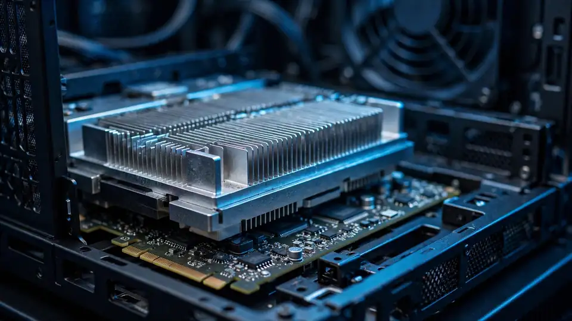

DeepSeek open-sources DeepInfer: its V4.1-Flash inference engine, on Nvidia and Huawei chips
- Who: DeepSeek, the Chinese AI lab, via a thread on its official X account on October 20, 2026.
- What: DeepInfer, described as “the high-performance inference framework that powers DeepSeek’s large-scale production services”, now open source under Apache 2.0, plus a companion token encoding/decoding library, deepseek-recipe (MIT), the layer behind its official API.
- Hardware: first release supports Nvidia SM100 (Blackwell) GPUs and Huawei Ascend 950 NPUs; serves DeepSeek-V4.1-Flash in offline inference mode only.
- The numbers (DeepSeek’s, not independently tested): one cluster serves 155 trillion tokens per day with a 96% input cache hit rate; ~400 ms time-to-first-token; over 25,000 output tokens/s/GPU at 256 requests per rank (EP64, 131,072 context).
- The reversal: in April 2025 DeepSeek said it would not release its full inference engine; the DeepInfer README still credits vLLM as what it was “originally built primarily on”, with ideas from SGLang and TensorRT-LLM.
DeepSeek on Tuesday open-sourced DeepInfer, the inference engine it says runs its own production AI services. Announced in a thread on the lab’s official X account, the release puts the code that sits between a model’s weights and a working API into the open under the Apache 2.0 license — and the headline detail is hardware: the first release runs DeepSeek-V4.1-Flash on Nvidia’s Blackwell GPUs and Huawei’s Ascend 950 NPUs alike.
Inference is the part of AI that happens after training: taking a finished model and serving answers to millions of people quickly and cheaply. It is where DeepSeek’s famously low API prices have always come from — and, as TechTarget notes, this is the first time the lab has shown the whole engine rather than individual parts, at a moment when enterprises are hunting for ways to cut inference costs as agentic workloads burn through tokens.
Alongside DeepInfer, DeepSeek released deepseek-recipe, its production token encoding and decoding component — the piece that turns an API request into a model prompt and the model’s output back into an API response — under the MIT license.
What’s inside the stack
Per the README, DeepInfer was “originally built primarily on” the open-source vLLM engine, with inspiration from SGLang and Nvidia’s TensorRT-LLM. It bundles kernels DeepSeek had already open-sourced — FlashMLA, DeepGEMM, DeepEP — adds custom kernels written in TileLang, and ships the systems tricks from its recent research made operational: attention data parallelism with balanced context parallelism, mixture-of-experts expert parallelism with expert load balancing (EPLB), and speculative decoding via “DSpark and confidence-scheduled verification” — drafting tokens ahead and using confidence estimates to decide which to verify, per AI Weekly’s readout.
An asynchronous zero-overhead batch scheduler keeps the device busy, a batch-invariant inference mode and deterministic sampling guarantee identical outputs for identical inputs and sampling parameters regardless of what else sits in the batch, and generation can be constrained to a regex, a JSON schema, or an EBNF grammar. Not in this release: a KV cache system, prefill/decode prefill separation, and load balancing across replicas.

The numbers DeepSeek claims
DeepSeek’s own production figures for V4.1-Flash, as compiled by press coverage, read like a flex: 155 trillion tokens per day per cluster, a 96% input cache hit rate, average time-to-first-token around 400 milliseconds, and 230 tokens per second per user — up to 300 for coding, per Tesla News Wire’s reading of the docs. Benchmarks published with the release claim above 25,000 output tokens/s/GPU at 256 requests per rank (EP64, 131,072 context). None of it has been independently tested; treat every figure as the vendor’s.
The community response was immediate: the repo drew thousands of stars within hours (one tracker put it at 5,500 stars and 415 forks), and the announcement thread passed 3,400 likes in its first hour. A popular reply noted the irony — OpenAI, the outlet quoted, “ended up staying closed” while the Chinese lab publishes its production stack.
A reversal — and a message
The turnaround is real. In April 2025, DeepSeek said it had considered releasing its full inference engine but decided against it: the code was a heavily customized early fork of vLLM, tightly coupled with internal cluster tooling, and its small team lacked the bandwidth to maintain a big open-source project. It promised to contribute pieces to existing projects instead. DeepInfer reverses that call — and its README still credits vLLM as the base.
The timing is pointed. The release lands days after Washington ordered federal agencies to strip DeepSeek models from their systems, amid a broader US–China split over AI infrastructure. DeepSeek’s answer is to open the engine that makes its models cheap to run — on Nvidia silicon and Huawei silicon in the same breath. The thread’s closing line: “Open models. Open kernels. Open inference.”
Frequently asked questions
What exactly is DeepInfer?
DeepSeek’s in-house inference framework — “the high-performance inference framework that powers DeepSeek’s large-scale production services.” An inference engine is the software that serves an already-trained model to users: it splits the model across chips, batches requests, and decides how fast answers come back. DeepSeek open-sourced it on October 20, 2026 under the Apache 2.0 license.
Why is the Huawei Ascend 950 support significant?
It is the first time a frontier lab has shipped a production inference stack with first-party support for Huawei silicon. Operators can now run DeepSeek-V4.1-Flash on Huawei Ascend 950 NPUs as well as Nvidia SM100 (Blackwell) GPUs — a concrete step toward running frontier models on something other than Nvidia.
Can I run it myself?
Yes — under Apache 2.0, anyone can use, modify, and sell it. The first release serves DeepSeek-V4.1-Flash in offline inference mode only, on SM100 GPUs or Ascend 950 NPUs. Note this release excludes a KV cache system, prefill/decode disaggregation, and load balancing across replicas.